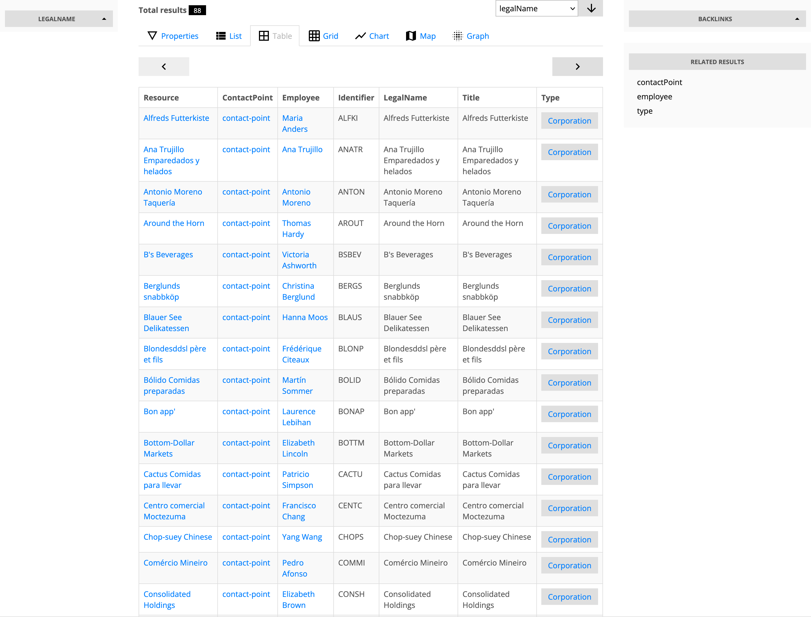
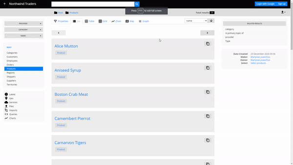

Views
Paginated views based on SPARQL queries

Views are interactive, paginated, and optionally ordered results of a SPARQL SELECT result set.
What is rendered in the UI is not directly the tabular result however, but descriptions
of the resources selected
by the result set. That is achieved by on-the-fly SPARQL query rewriting: the SELECT is wrapped into
a DESCRIBE query; DESCRIBE reuses the same variables from the SELECT projection.
This will not work for all SELECT queries.
To render paginated lists of resources, legacy applications would normally have a dedicated API endpoint that supports pagination, ordering etc. In LinkedDataHub, views achieve the same functionality by simply building the SPARQL query string on the client-side. Therefore views can be seen as client-side "containers".
Views can be rendered in multiple layout modes: properties, list, grid, table, map, chart etc. They also show the total number of results and allow result ordering by property.
Layout modes
View results can be rendered using the same layout modes as the document layout modes.
Faceted search
On the left side, views provide faceted search which acts as a filter that narrows down the view results.
By default the facets are generic and inferred from the triple patterns of the SPARQL
SELECT query used by the view. They can be customized using XSLT.
Parallax navigation
Parallax navigation is a rather unique navigation approach that lends itself perfectly to graph data. It is enabled for container content and shown as Related results on the right side of the view. Parallax allows "jumping" from a result set to a related result set using the selected RDF property. It works in combination with faceted search which can be used to filter the initial result set.
For example, facets can be used to filter a set products that belong to a certain category, and then parallax can be used to jump to a set of companies that provide those products, and then further on to a set representatives of those companies.
